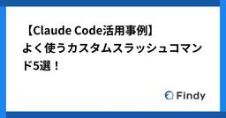
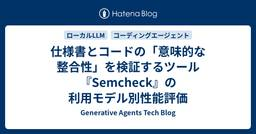
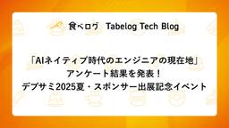
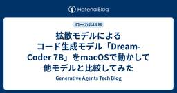
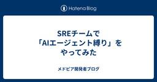
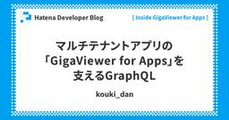
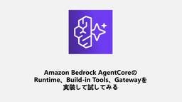
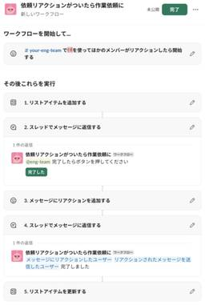

直近1週間の人気フィード
はてなブックマーク数を元に新着優先で並べ替え

90秒かかるDELETE文の原因を探る【PostgreSQL】 130
130 エムスリーテックブログ
エムスリーテックブログ
こんにちは！ デジスマチームの山田です。これはデジスマチームのブログリレー4日目の投稿です。 事業が成長してユーザー数やトランザクションが増加すると、それに比例して扱うデータの量やバリエーションも増加します。サービス規模の拡大に伴い発生する課題の1つにスロークエリがありますが、デジスマ診療においてもサービスの成長とシステムの健全性を維持するためにクエリの改善に日々向き合っています。 データベースの気持ちを知りたい
2日前
Claude Code Sub Agents 実践ガイド：自動委任機能の効果的な活用法！ 67 アスエネテックブログのフィード
アスエネテックブログのフィード
アスエネ株式会社の @umzo（うめぞう）です！アスエネでは「アスエネキャリア」という脱炭素・ESG人材の転職支援サービス開発のチームリーダーをしています。アスエネキャリアとは？アスエネキャリアとは、脱炭素・ESG人材の転職支援サービスです。持続可能な社会を目指し、脱炭素や気候変動、サスティナビリティに関心のある人々が、最適なキャリアを築けるようにサポートしています。 はじめにClaude Code の新機能である Sub Agents は、複雑なタスクを専門的なエージェントに委任することで、より効率的な開発を実現する機能です。発表されたばかりの機能で、不明なことも多いため、...
13時間前

Figma MCP Serverで変わるWeb開発 96 CyberAgent Developers Blog | サイバーエージェント デベロッパーズブログ
CyberAgent Developers Blog | サイバーエージェント デベロッパーズブログ
みなさんこんにちは。最近渋谷でクレカを落としたところ、偶然弊社の人事が拾って届けてくれたことで事なき ...
2日前

なぜ、仕事が大きくなると手が止まるのか 74 Wantedly Engineer Blog
Wantedly Engineer Blog
こんにちは。ウォンテッドリーの Enabling チームでバックエンドエンジニアをしている市古（@sora_ich...
2日前
GMOペパボで活躍中の id:antipop を訪問 | はてな卒業生訪問企画 [#16] 64 Hatena Developer Blog
Hatena Developer Blog
連載企画「卒業生訪問インタビュー」 第16回のゲストは、GMOペパボ株式会社 取締役CTO 兼 CTO室室長 兼 事業開発部部長のid:antipop こと、栗林健太郎さんです。はてな 取締役のid:onishiがお話を伺いました。
3日前
新Linuxカーネル解読室落穂拾い (1) 63 VA Linux エンジニアブログ
VA Linux エンジニアブログ
Linuxコード解析の初心者向けシリーズがスタート！本シリーズでは、Linuxにテーマを絞り、これからコード解析に挑戦したい方に向けて"入口"となる情報をお届けします。筆者の視点から、「ちょっと気になるポイント」や「今さら聞けない基礎知識」をやさしく解説。Linuxの裾野を広げたい──そんな想いから始まった本企画を、コード解析学習の第一歩としてぜひご活用ください。
3日前
「まだ任せられない」から「どうすれば任せられるか？」へ。チームを育てる権限委譲の3ステップ 29 Wantedly Engineer Blog
こんにちは、ウォンテッドリーでエンジニアリングマネージャーをしている鴛海です。マネージャーという役割は、常に時間と...
1日前

【Claude Codeの活用事例】よく使うカスタムスラッシュコマンド5選！ 93
 Findy Tech Blog
Findy Tech Blog
こんにちは。ファインディでソフトウェアエンジニアをしている千田（@_c0909）です。 2025年3月末頃からファインディに導入されたClaude Codeは、私たちの開発フローに大きな変化をもたらしました。特に私が注目し活用を進めてきたのが、カスタムスラッシュコマンドの機能です。 Claude Codeを初めて触った時は、CLAUDE.mdに長文で汎用的な指示を書いてコードを生成していました。しかし、全てのプロンプトを網羅するには限界があり、より効率的な活用方法を模索していました。そんな中で出会ったのが、このカスタムスラッシュコマンド機能です。 この機能は、日々のGit操作やコーディング作業…
4日前
SentryのAlert Best Practicesを参考にアラート疲れから脱却する 42 inSmartBank
inSmartBank
こんにちは、スマートバンクでサーバサイドエンジニアをしているnagasawaです。 皆さんアプリケーションのエラートラッキングを何かしらのツールで行っていると思いますが、日々多くのアラートが届き以下のような悩みをお持ちではないでしょうか。 どれが今すぐ確認すべきアラートなのか見分けがつけにくい 件数が多く対応状況が把握しづらい アラートがオオカミ少年に近い状態になっており、重要なアラートが見逃されてしまうことがある 下図のように、スマートバンクでも多い日は10~20件ほどアラートが届いていました。決済系の機能群など一度でもエラーが発生したらすぐに対応したいアラートに反応しやすくするためにも、上…
2日前
夜ぐっすり眠るための監視分類 185 Technology - NRIネットコムBlog
Technology - NRIネットコムBlog
本記事は AWSアワード受賞者祭り 6日目の記事です。 ✨🏆 5日目 ▶▶ 本記事 ▶▶ 7日目 🏆✨ こんにちは、玉邑です。 年齢を重ねるにつれて、睡眠時間が翌日のパフォーマンスに大きく影響することを実感するようになりました。よく眠ることの大切さを、改めてしみじみと感じています。今回は、そんな貴重な睡眠時間をしっかり確保するための工夫についてお話しします。 ITシステムの運用に携わっている方であれば、夜間や休日のオンコール*1対応を経験されたことがあるのではないでしょうか。 私自身も、15年以上前にシステム運用を担当していた頃は、連日鳴り止まないオペレーターからの電話に疲弊していました。 当…
5日前
DifyのReActを用いてナレッジ／記事要約エージェントを作ってみた 60 Taste of Tech Topics
Taste of Tech Topics
皆さんこんにちは。バックエンドエンジニアの前田です。 最近は、いよいよ暑さが本気を出してきたので、熱中症対策をしなくては、と考えています。さて、今回はDifyのv1.0.0で追加されたReActを用いてナレッジ／記事要約エージェントを作成しました。 ナレッジに登録したドキュメントなどをもとに、Web検索もして情報を補足し、文章を要約するエージェントが欲しいと思い、作ってみました。Difyの環境構築と基本的な使い方については以下の記事を参考にしてみてください。 今回はDifyのv1.6.0を用いて作成しました。 acro-engineer.hatenablog.com 1. DifyにおけるRe…
4日前
開発組織の全員が Devin と Cursor を活用するための取り組み 55 Wantedly Engineer Blog
こんにちは、AI Enabling Squad の @fohte です。この記事は夏のアドベントカレンダー 23 ...
3日前

仕様書とコードの「意味的な整合性」を検証するツール『Semcheck』の利用モデル別性能評価 53 Generative Agents Tech Blog
Generative Agents Tech Blog
ジェネラティブエージェンツの西見です。 Claude Codeなどのコーディングエージェントを活用するためには、的確な指示だけでなく、エージェントが生成したコードの誤りを自律的に検知・修正する仕組みが重要となります。誤り検知には自動テストやLinterが有効ですが、本記事では、仕様書とコードの「意味的な整合性」を検証するツール「Semcheck」に着目し、その性能を複数のLLMで比較評価します。 Semcheckとは Semcheckは、LLMを利用して、仕様書（Markdown形式）とソースコード間の意味的な整合性を検証するGo言語製のツールです。構文やスタイルを対象とする従来の静的解析ツー…
3日前

「AIネイティブ時代のエンジニアの現在地」アンケート結果を発表！デブサミ2025夏・スポンサー出展記 25 Tabelog Tech Blog
Tabelog Tech Blog
はじめに こんにちは、食べログ開発本部の小嶋です。 2025年7月17日・18日に開催された「Developers Summit 2025 Summer」に、カカクコムはプラチナスポンサーとして参加しました。 本記事では、当日の現地の様子をお伝えしつつ、展示ブースにお立ち寄りいただいたエンジニアの皆さまにご協力いただいたアンケート 「AIネイティブ時代のエンジニアの現在地」 の結果を発表いたします。 Developers Summit 2025 Summerとは 「Developers Summit（通称：デブサミ）」は、翔泳社が主催する日本最大級のソフトウェア開発者向けカンファレンスです。2…
2日前
「あのやり取りどこでやったっけ？」を AI で解決！ Slack 擬似 Deep Research を作ってみる 22 Ubie テックブログのフィード
Slackのようなチャットツールでのコミュニケーションが日々活発に行われる組織は多いかと思います。しかし、その高頻度なやりとりの中で、「あの情報、どのチャンネルで話したっけ？」「誰が担当だったかな？」と、過去の重要なやりとりを見失ってしまうことはないでしょうか。この記事では、この課題を解決するための一つのアプローチとして、 Ubie で Slackの過去の会話をAIが深く検索・要約してくれる「擬似 Slack Deep Research」 を開発した事例についてご紹介します。 Slack Deep Research のイメージSlack を Deep Research するという...
2日前
a11y 上の理由で Deprecated になった HTML と ARIA まとめ 19 サイボウズ フロントエンドのフィード
!この記事は、CYBOZU SUMMER BLOG FES '25 の記事です。こんにちは、フロントエンドエンジニアの mehm8128 です。今回は敢えて、a11y 上の理由から Deprecated になった HTML と ARIA をまとめてみようという記事です。 Deprecated の定義今回 "Deprecated" は、基本的に MDN において Deprecated の表示があるものを指すこととします。ただし、MDN からも既に削除されているものについては例外となります（＝ Deprecated の表示がないけど今回の定義に含みます）。MDN の "Dep...
2日前
Next.js Version Skew 真相解明編 18 Wantedly Engineer Blog
こんにちは。ウォンテッドリーでフロントエンドチームのリーダーをしている原です。先日「Next.js の Versi...
2日前

拡散モデルによるコード生成モデル「Dream-Coder 7B」をmacOSで動かして他モデルと比較してみた 15
Generative Agents Tech Blog
ジェネラティブエージェンツの西見です。 Googleが発表した拡散モデルを利用した言語モデル「Gemini Diffusion」があまりにも爆速で動作していたのは記憶に新しいです。 deepmind.google そんな中、2025年7月15日に拡散モデルベースのオープンウェイトのLLMである「Dream-Coder」が公開されたのを見て、ローカルでどのぐらいの速度が出してくれるのかが気になり、検証してみました。 github.com Dream-Coderとは Dream-Coderは、香港大学NLPグループが開発した拡散モデルベースのコード生成LLMです。従来の自己回帰モデル（左から右への…
2日前

SREチームで「AIエージェント縛り」をやってみた 28 メドピア開発者ブログ
メドピア開発者ブログ
はじめに こんにちは。SREチームの侘美です。 弊社ではLLM（大規模言語モデル）を活用したコーディング、特にDevinやClaude Codeのようなエージェント型ツールを積極活用する方針を打ち立て、各種ツールを利用できる環境を整備しています。 また、習熟やノウハウの獲得のため各チームで一定期間AIエージェント縛りで開発を行い、得られた知見や課題を共有する活動も進めています。 我々SREチームでも2週間にわたってAIエージェント縛りで開発する実証実験を行いました。 本記事では、この実証実験を通じて得られた、通常のプロダクト開発チームとは異なるSREチームならではの課題や知見を共有します。 前…
4日前

JavaScript の Object 比較を変えるか？ 新しいプロポーザル proposal-composite とは 20 エムスリーテックブログ
皆さん、こんにちは！ デジスマチームの小島(@jiko_21)です。 このブログはデジスマチームブログリレーの 2 日目の記事です。 JavaScript の進化は止まりませんね！ 毎年、新しい仕様が TC39（ECMAScript の標準化委員会）にて議論され追加されています。 今回は、最近 TC39 に追加された、proposal-compositeについてご紹介します。これは、JavaScript におけるObjectの比較という、長年の課題を解決する可能性を秘めた興味深い提案です。
4日前
レガシーシステムに挑む！リファクタリング実践レポート 36 RAKUS Developers Blog | ラクス エンジニアブログ
RAKUS Developers Blog | ラクス エンジニアブログ
1. はじめに こんにちは！配配メール開発チームのos188です。 今回は、長年動き続けてきたレガシーシステムに向き合い、現実的なリファクタリングに挑戦した事例をご紹介します。 1. はじめに なぜリファクタリングに踏み切ったのか？ 2. リファクタリング方針と技術選定 既存システムの構成 リファクタリングの主な方針 3. 実践！レガシーコードをモダンに生まれ変わらせるステップ ステップ1：既存ソースの徹底把握 ステップ2：新クラス構成とフォルダ構成の検討 ステップ3：ドメインモデル設計・実装 ステップ4：実装 ステップ5：E2Eテスト・リグレッションテスト 4. 数値で見る劇的改善！PhpM…
4日前
“なんとなくOK”を卒業する ― デザインレビューの視点を洗練させるには 29 Wantedly Engineer Blog
はじめまして。ウォンテッドリーでMobile Tech Leadを務めている久保出と申します。この記事は、2025...
5日前
Claude Codeを使い始めるためのアレコレ 3 VISASQ Dev Blog
VISASQ Dev Blog
7月も半ばとなり、そろそろ外気温が体温を追い越す時期ですね。こんなに爆速で地球が温暖化するなんて聞いてないんですが皆様いかがお過ごしでしょうか。 我々は非常にか弱い有機生命体ですので、暑さを感じたら躊躇わずエアコンをつけましょう。最近やってるゲームはデススト2です。あの……私実は公式トレーラーを見ずに始めてしまったので、非常にショックを受けたのですが……、信じて駆け抜ける形で大丈夫ですか？ さて、本日のお題は単純明快ですね。タイトルの通りです。 正直なところanthropicの公式開発者ガイドに全部書いてあるので、わざわざ書く必要があるのだろうか？という疑問はありますが、そんな事を言っていたら…
1日前

IPAの情報処理技術者試験は使えるのか 3 ヘッドウォータースのフィード
IPAの資格って使える？先日、応用情報技術者試験に合格しました。嬉しいです。ところで、IPAの資格の話になるとこんな声を聞くことがあります。「実務で使わなくない？実務のほうが大事じゃない？」「エンジニア以外必要ないじゃん？」「基本情報とか応用情報って取る意味ある？」確かに応用情報はじめ、IPA資格には実務に直結しづらい内容も含まれています。ただし、資格を取得した方・取得しようとしている方の中で、「使えるか使えないか」といった単一的な視点で考えている方も少ないと思います。私もそんなふうには考えていませんので、今回は上にあるような声に応えられるよう、IPA資格...
2日前

システムを属人化させない、エンジニア全員で取り組むサポート体制 35 Wantedly Engineer Blog
はじめにこんにちは。夏のアドベントカレンダー21日目を担当する、バックエンドエンジニアの西野（@keppagruu...
5日前

Server Functions っぽい仕組みを自作して Lambda 関数呼び出しに適用してみた 21 エムスリーテックブログ
デジスマチームの池奥です。 新卒2年目のソフトウェアエンジニアです！ 先週、人生で初めて外部モニターを買いました。快適な作業環境を手に入れたと思ったのですが、モニターのある環境に慣れておらずすっかり持て余しています。今のところ YouTube ビュワーとして活躍しています。 このブログは、デジスマチームブログリレーの 1 日目の記事です 🎉 イントロ 普段、私はNode.jsでバックエンドを実装することが多いのですが、一部の処理を AWS Lambda のような別の実行環境に切り出したい、というシーンに時々遭遇します。このような場合、Lambda の実装は別のパッケージに置き、元のサーバーから…
4日前

マルチテナントアプリの「GigaViewer for Apps」を支えるGraphQL 8 Hatena Developer Blog
こんにちは、マンガアプリチームのエンジニアの id:kouki_dan です。『Inside GigaViewer for Apps』の連載12回目のこの記事は、出版社向けマンガビューワのアプリ版である「GigaViewer for Apps」（以下 GigaApps）のAPI通信にGraphQLをどのように活用しているか、採用経緯から開発の工夫までをご紹介します。 GigaApps以前のGraphQL検証 GigaAppsにおけるGraphQL Apolloを使った設計 汎用的な処理は共通のコンポーネントで楽をする ノーマライズドキャッシュによる画面間での情報の伝播 GraphQLでのスキー…
4日前

Amazon Bedrock AgentCoreのRuntime、Built-in Tools、Gatewayを実装して試してみる 4 Technology - NRIネットコムBlog
本記事は AWSアワード受賞者祭り 8日目の記事です。 ✨🏆 7日目 ▶▶ 本記事 ▶▶ 9日目 🏆✨ はじめに 1. AgentCore Runtime 主な特徴 ローカルで実行してみる AWSへのデプロイ 2. AgentCore Built-in Tools 主な特徴 ツール単体で実行してみる コード 実行結果 ライブラリの確認 AgentCore Runtimeから使ってみる コード 出力結果 3. AgentCore Gateway 主な特徴 LambdaからGatewayを作成する Lambda関数の作成 コード Gatewayの作成 Strands Agentsから使ってみる コ…
3日前

これで依頼対応は絶対に漏れない！ 簡単確実Slackワークフロー 18 エムスリーテックブログ
エンジニアチームの仕事は開発、調査、障害対応などあって日々チケットを起票しては消化しながらお仕事を皆様回しておられるのではないかと思います。一方で、チケットにすることのない作業依頼というのも少なくないのではないでしょうか。「ミーティングのリスケ先日程を探して移しておいてください」などなど⋯ そして次に起こる問題は「Slack上で依頼が流れてしまって対応が漏れていた」ですね？ 作業依頼の対応漏れというエラー、再発防止はどうしましょう、すべての依頼でチケット切ることにしますか？ はい、それが確実なのですが、体裁に沿ったチケットを書くというのはそれなりに重い作業です。依頼をためらわせてしまうという難…
5日前
Amazon Bedrock AgentCoreを一通りさわり倒してみる ~ Code Interpreter 編 ~ 3 Generative Agents Tech Blog
ジェネラティブエージェンツの遠藤です。 先日発表されたAmazon Bedrock AgentCore、まさに「これ欲しかったやつ！！」の塊で、いろいろな機能を試すたびにテンションが爆上がりしています・・・！ その勢いで始めた『一通りさわり倒してみる』シリーズ、今回はCode Interpreter編になります。 今までの『一通りさわり倒してみる』シリーズもぜひご覧下さい。 blog.generative-agents.co.jp blog.generative-agents.co.jp Code InterpreterはAgentCore built-in toolsと呼ばれる組み込みツール…
2日前
ピクシブ歴10年超のベテラン社員が語る！サービスと会社が成長し続けてきた原動力とは？＜前編＞ 3 pixiv inside
pixiv inside
総登録ユーザー数が1億人を突破したpixivは、今年でリリースから18年。ピクシブはその他にもBOOTHやpixivFANBOXなど、多岐にわたるサービスを展開し、多くのクリエイターとファンの方に支えられながら、会社としても成長を続けてきました。 その道のりの裏側には、どのような想いや挑戦があったのか。ピクシブで10年以上働く3名のベテラン社員に、会社の歴史、文化、そしてこれからについて語ってもらいました。 メンバー紹介 drill：2009年中途入社。Pixiv Division アドプラットフォームSectionのleadとして広告事業を統括している。 uchien：2011年新卒入社。P…
2日前

社内管理画面を Slack App から Lambda Web Adapter を利用した Web アプリケーションに移行している話 3 KAKEHASHI Tech Blog
KAKEHASHI Tech Blog
はじめに 処方箋データ連携チームでエンジニアをしている岩佐（孝浩）です。 カケハシには「岩佐」さんが複数名在籍しており、社内では「わささん」と呼ばれています。 私が所属する処方箋データ連携チームでは、これまで Slack App を用いて社内管理画面を構築・運用してきました。 しかし、運用を続ける中でいくつかの課題が明らかになってきたため、現在は Lambda Web Adapter を利用した Web アプリケーションへの移行を進めています。 本投稿では、Slack App から Web アプリケーションへの移行に至った背景と、移行前後のシステム構成についてご紹介します。 移行の背景 Sla…
3日前

AWS Roadmap Acceleration Program に参加しました【前編】 12 Repro Tech Blog
Repro Tech Blog
Repro Boosterのプロダクトマネージャー、Edward Foxです。好きなAWSサービスはAWS Ground Stationです。AWS Ground Stationを知った際に、軽い気持ちで衛星基地局のデータを受信するNode.jsのプログラムを書いて動かしてみたところ、瞬く間に3万円ほど消費されたのは良い思い出です（涙目）。新しいサービスを動かす際は、必ず事前に料金表を確認してから取り組むことを学びました。 さて、Repro Boosterは多くのシステムコンポーネントがAWS上で稼働しており、各種サービスを組み合わせることで効率的なシステム提供と運用を実現しています。主に利用…
4日前
Amazon Bedrock AgentCoreを一通りさわり倒してみる ~ Memory編 ~ 12 Generative Agents Tech Blog
ジェネラティブエージェンツの遠藤です。 Amazon Bedrock AgentCoreは、まさに「これ欲しかったやつ！！」の塊で、テンションが爆上がりしています・・・！ そんな勢いで始めた『一通りさわり倒してみる』シリーズ、今回はAgentCore Memory編をお届けします。 前回はAgentCoreがいかに熱いかの感想と実際にAgentCore Runtimeを触ってみたまとめになっているので、ぜひそちらもご覧下さい。 blog.generative-agents.co.jp Memoryに関する第一印象としては「よくぞこの仕組みをマネージドにしてくれた！」という感じですね。 エージェ…
5日前
宣言的AIコーディングのススメ 5 ABEJA Tech Blog
ABEJA Tech Blog
こんにちは。CTO室の村主です。 Claude Codeを日々使う中で思っていることをGeminiに言語化してもらいました。 Gemini製作物ですので、超最新トレンドを掴んでいなかったり、書き味がイマイチなところも敢えて残していますので、読み物として楽しんでください。 宣言的AIコーディングのススメ AIがコードを書く時代が本格的に到来しつつあります。しかし、「AIにコードを書かせたけどうまくいかない」「毎回指示の仕方に悩む」といった声も聞かれるのではないでしょうか。その問題の根底には、AIへの「指示の出し方」があるのかもしれません。 この記事では、AIコーディングの効率と品質を劇的に向上さ…
4日前
ジュニアエンジニアなら“AI駆動開発は設計が9割” ─ 出戻りゼロの実践手法 4 スペースマーケット Engineer Blogのフィード
はじめにこんにちは、スペースマーケットでインターン中のジュニアエンジニア、akipaint です。「AIでコードを書く」ことが当たり前になりつつある今日この頃。特に生成AIを使った開発手法──いわゆるAI駆動開発は、個人開発や実務問わず急速に広がっています。僕自身、インターンや個人開発を通してAIと一緒にコードを書いています。しかし、そんな中でこんな疑問にぶつかります。「このコード、本当に使って大丈夫？」「どこまでAIに任せていいんだろう？」「AIで爆速開発！…のはずが、出戻りばかりしてる…」そこで今回は、僕が実践している「ジュニアエンジニアにこそ必要なAIの正...
3日前
ChatGPTのしくみとAI理論の根源に迫る:（1/16）実は語を1個ずつ後ろに追加しているだけ（翻訳） 3 TechRacho
TechRacho
概要 原文サイトのCreative Commons BY-NC-SA 4.0を継承する形で翻訳・公開いたします。 英語記事: What Is ChatGPT Doing … and Why Does It Work?—Stephen Wolfram Writings 原文公開日: 2023/02/14 原著者: Stephen WolframMathematicaやWolframAlphaの開発者として知られる計算科学者・理論物理学者です 日本語タイトルは内容に即したものにしました。原文が長大なので、章ごとに16分割して公開します。 スタイルについては、かっこ書きを注釈にする、図をblockquoteにするなどフ […]The post ChatGPTのしくみとAI理論の根源に迫る:（1/16）実は語を1個ずつ後ろに追加しているだけ（翻訳） first appeared on TechRacho.
3日前

なぜSwiftのUI更新はメインスレッドでなければならないのか？ 5 Wantedly Engineer Blog
こんにちは！ウォンテッドリーでiOSエンジニアとして働いている湊(https://www.wantedly.com...
4日前
生成AIを翻訳業務に上手に使うには
4 ラック・セキュリティごった煮ブログ
ラック・セキュリティごった煮ブログ
こんにちは、ディオゲネスです。 突然ですが、生成AIを用いて、日本語文書を英語文書に翻訳する機会がありました。今回は、生成AIを用いて翻訳業務を行う場合に、どんな工夫をするとうまくいき、またどんな注意点・苦労があるか、などについて得られたノウハウを、記憶の新しい内にまとめておきたいと思っています。 翻訳と一口に言っても、小説なのか技術文書なのか、文書の特性によって色々だとは思いますが、同じように翻訳を生成AIのサポートを受けながら実施する方たちの参考になれば、と思います。 （１）生成AIの翻訳の実力 私は、サイバーセキュリティ分野で仕事をしていて、比較的英語情報に日常的に触れる環境にいます。し…
5日前